Besides the wallpapers, this project produced a few things that may be useful to other people working with fractals.
Gallery locations
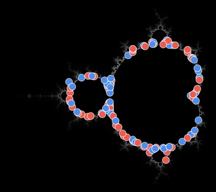
Mandelbrot
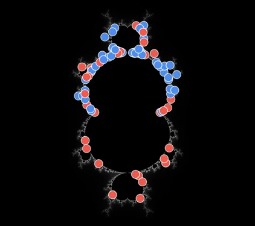
Multibrot, degree 3
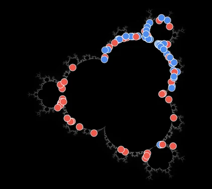
Multibrot, degree 4
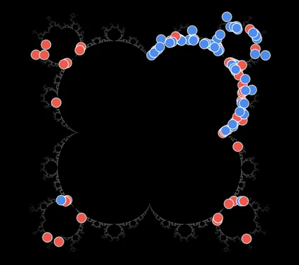
Multibrot, degree 5
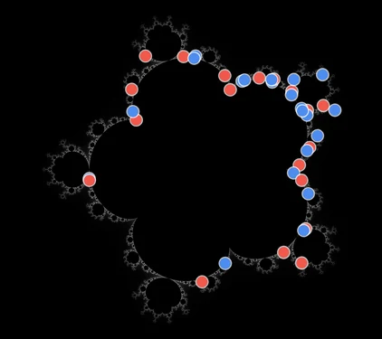
Multibrot, degree 6
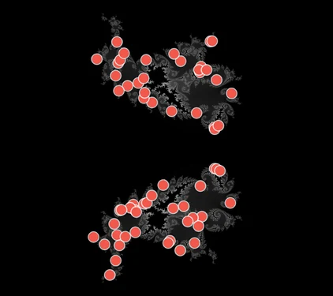
Phoenix, the classic slice
Every picture in the wallpaper galleries is a place in a fractal and a complete
recipe for drawing it there. gallery-locations.jsonl
holds all 6,299 of them, one JSON object a line: the fractal family, the center, width,
and iteration cap, the rendering mode, the palette and its settings, the collections the
picture belongs to, the wallpaper and gallery judges' scores, and a link that opens it in
the fractal explorer. The link is the whole recipe,
so the explorer, or fractal-engine render-link from
fractal-wallpapers, will
draw any of them again at any size. The file is licensed
CC BY 4.0, like the
wallpapers.
The explorer's Deep tab also holds a thousand
Random dives. They were found by a
procedural dive rather than picked or judged, so they are less useful as a list, and it
is easy to make more: python -m builder random-dives --until N in the
fractals repository lands new ones
until there are N. It needs Node and a Rust toolchain as well as Python.
Palettes
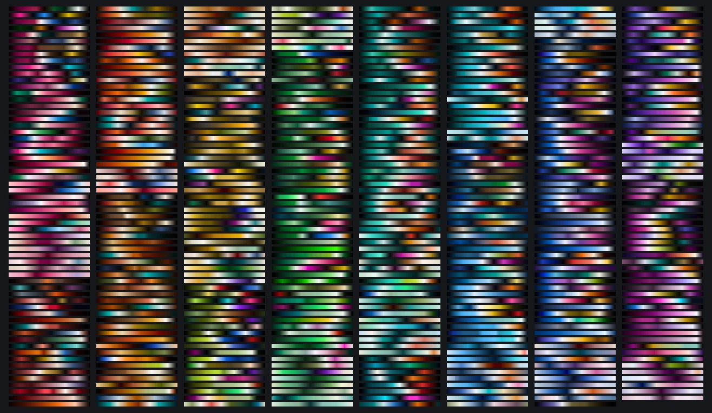
hand-made-palettes.json holds the 495 palettes I made for this project, as color stops. They are released under CC0, so you can use them for anything, with no credit needed. Each one's name matches its strip on the palette library page, and Make your own palettes describes how they were made. The rest of the library came from other sources and is not included.
Judges
Location judge
Over 226,791 places the walks offered it
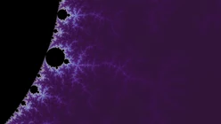
P(=1) 0.98
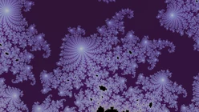
P(=2) 0.75
P(=3) 0.92
P(=4) 0.98
Wallpaper judge
Over 566,920 candidate pictures
P(=1) 0.98
P(=2) 0.78
P(=3) 0.96
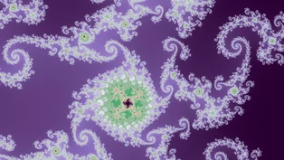
P(=4) 0.99
Gallery judge
Over the 62,373 pictures in the pool it orders
P(=1) 0.72
P(=2) 0.48
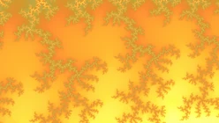
P(=3) 0.53
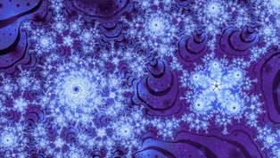
P(=4) 0.64
Palette judge
Its score, over one place drawn in the 32 palettes of one set

score −3.607Lemon Ember
score 0.604Chartreuse Marigold
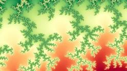
score 2.640Mint Poppy
score 3.835Amber Brick
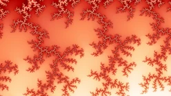
score 5.848Coral Ember
The four neural networks that rated locations and wallpapers, ordered the galleries, and chose palettes are released with the fractal-wallpapers code under MIT, as weights-2026-09-14. Each is a MobileNetV4. Three of them take a picture, stretched to 384×224, and return the probability that it would earn at least a 2, a 3, and a 4 on my 1-to-4 scale. The palette judge works differently: for each place, it scores the place drawn in each of a set of candidate palettes, and its score only means something against the others in that set. They were trained on ordinary double-precision pictures, so read their scores on deep zooms with caution. Training judges describes how they were made.
Hand labels


Wallpapers


The ratings I gave while training the judges are in the fractal-wallpapers repository under data: locations in data/labels, wallpapers in data/smooth_render and data/strange_render, and gallery grades in data/gallery_grade. A wallpaper or gallery rating is stored with the complete recipe of the picture it rates, and a location rating with the place and the settings it was drawn at. Aesthetic ratings of fractals are rare, so they may be useful on their own.